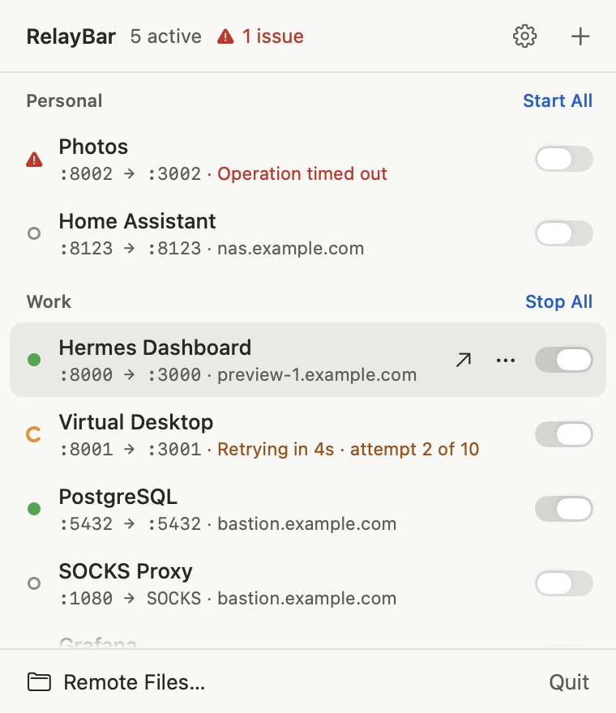
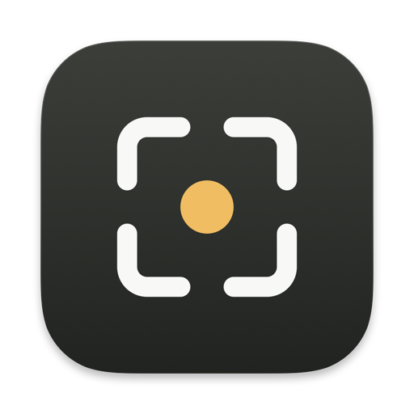
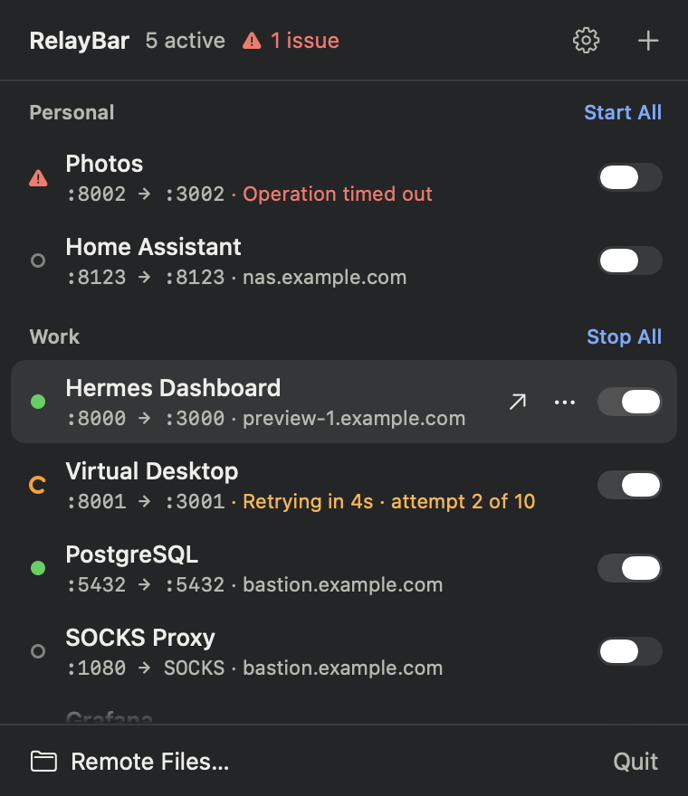
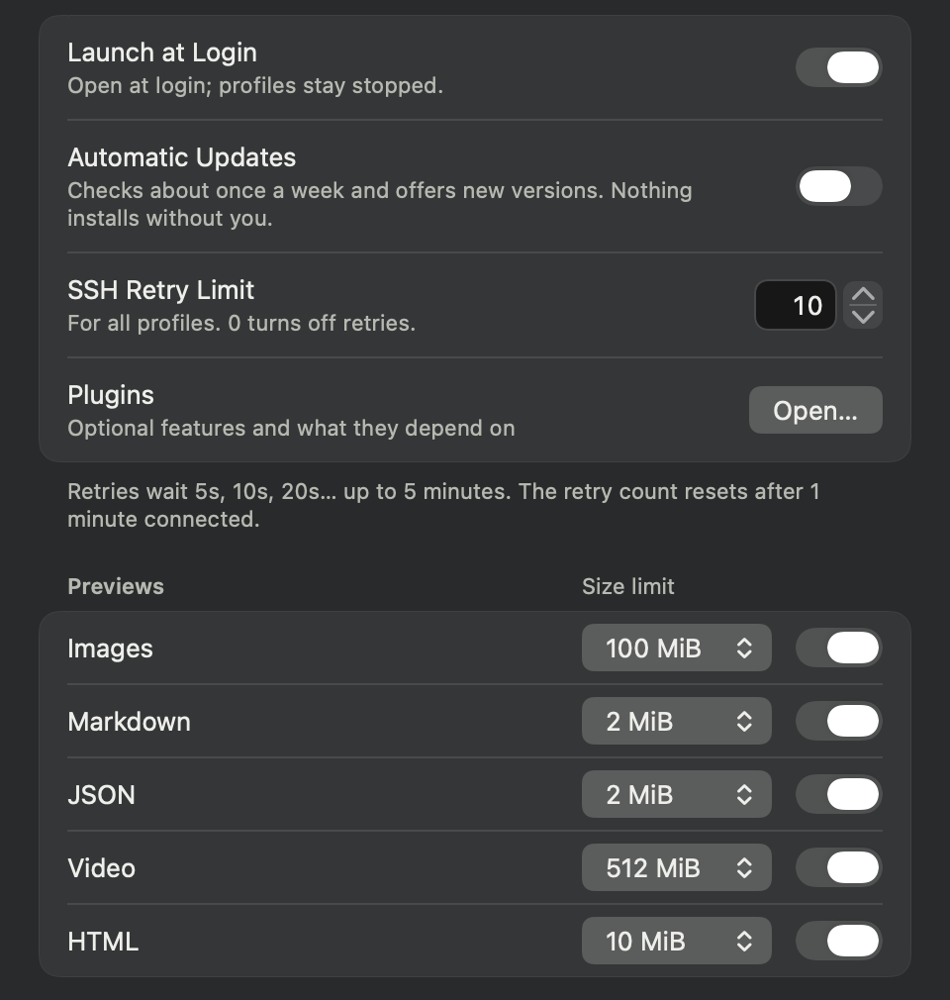
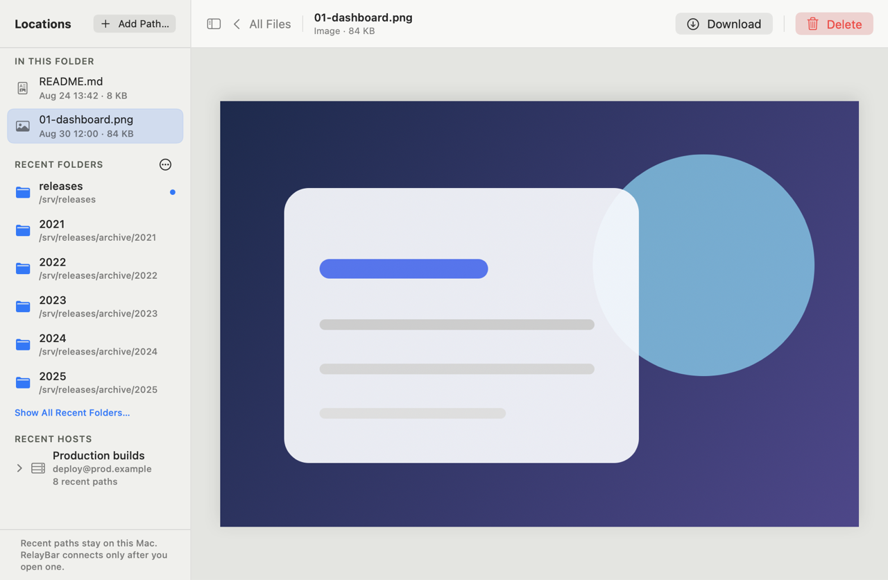
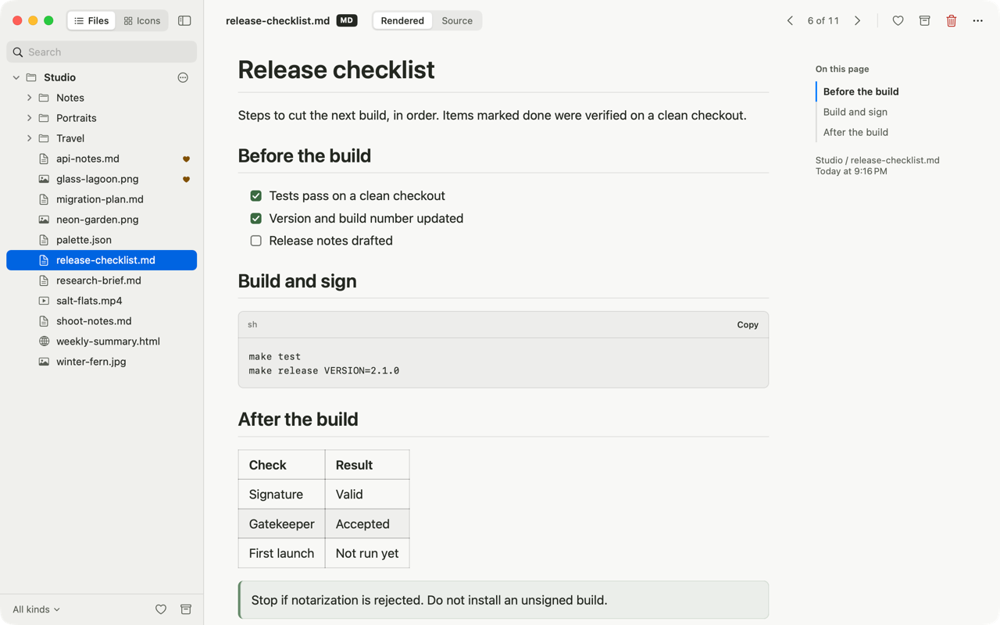
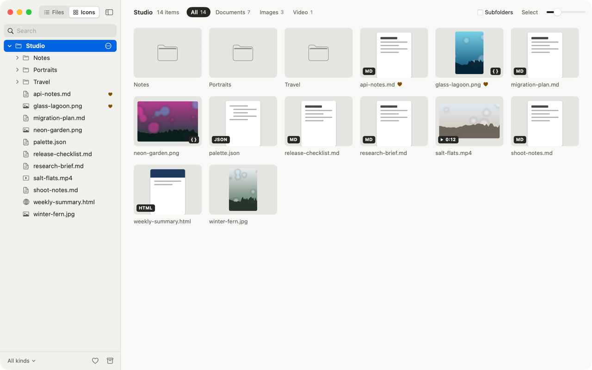
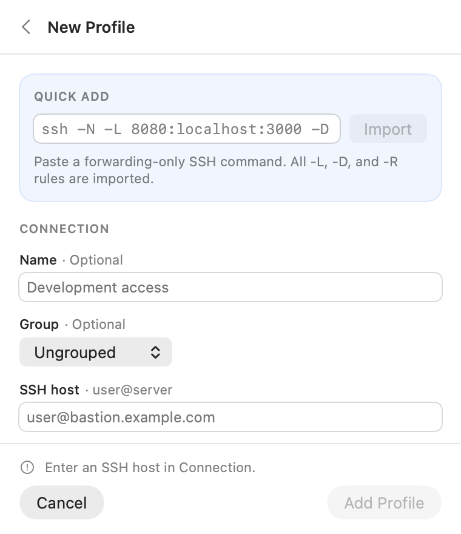

RelayBar 2.0.0 Beta 1
A flatter popover, Settings in its own window, a Plugins window and a new icon. The menu-bar mark dims when no tunnel is running and adds an exclamation mark when one fails. Needs macOS 13 or later.
A tiny native macOS menu-bar app. Paste an SSH command, get a saved profile—local, SOCKS, remote, and Unix-socket rules over one managed connection.
Free · Apple notarized · macOS 13+ · No accounts · No analytics
brew install --cask lx2026/tap/relaybar
ssh -N -L 3000:127.0.0.1:3000 -D 1080 devbox.local

Screenshots on this page show the 2.0 beta, with sample data.
Your config, keys, known hosts, and agent stay untouched.
No Electron, no background service, no replacement SSH stack.
No account, analytics SDK, or cloud sync phones home.
2.0.0 is the first version where RelayBar and Frame ship as a pair. RelayBar keeps your tunnels and the SSH connection. Frame reads folders of images, video, Markdown and HTML, on your Mac or on your server through RelayBar.
A flatter popover, Settings in its own window, a Plugins window and a new icon. The menu-bar mark dims when no tunnel is running and adds an exclamation mark when one fails. Needs macOS 13 or later.

A reader for folders of mixed files, on your Mac or on your server: a folder tree, an outline for Markdown and a mark on files changed since you last opened them. Needs macOS 14 or later.


Reopen a recent folder in one click, browse saved paths by host, or add an exact path. RelayBar connects only when you open a location.

Successful folders stay one click away—without scanning or indexing the server.
Expand a recent host to revisit its paths, or add another exact absolute path.
Stage one local file before publishing it. Preview and download stay in the same workspace.
Frame reads folders of images, video, Markdown and HTML. Open a folder on your Mac, or choose Open in Frame in RelayBar’s Remote Files to read one on your server through RelayBar’s connection. Nothing is imported.
Frame is in beta: download Frame 2.0.0 Beta 1 or read its release notes. It needs macOS 14 or later. Its remote folders need RelayBar 2.0.0 Beta 1; an older RelayBar is refused.

A folder tree beside the file on show. Files mode reads one file; Icons mode shows the folder as thumbnails. Sidecar files fold into the file they describe.
An outline beside rendered Markdown, a Source view for Markdown and HTML, and a dot on each file changed since you last opened it.
Switch optional features in each app’s Plugins window and see what each one needs. Paper Appearance, on by default, gives both apps the same warm colours; turn it off for standard macOS colours.

Markdown HTML stays literal text. HTML-file previews are different: they can run page scripts and load online resources. Read the Frame release notes
RelayBar parses typed forwarding arguments without invoking a shell, turns them into a visible profile, and keeps the controls in your menu bar.
Import repeated or mixed -L, -D,
and -R rules.
Name the profile, check each typed endpoint, and optionally place it in a group.
Start, stop, retry, and open supported endpoints without keeping a Terminal tab around.

Choose how often SSH reconnects, undo a pending delete, and preview more files without leaving RelayBar.
Exponential backoff and a saved retry limit. Set it to zero to turn automatic reconnects off.
Single and bulk file deletion wait before reaching the server. Undo during the countdown to keep your files.
Read selectable JSON and play MP4 files with native controls. Uploads show byte and percentage progress.
Distinct paths, compact endpoints, and profile forms that explain exactly what needs fixing.
RelayBar manages visible typed forwarding rules over one SSH connection per profile. It doesn’t add an account, analytics SDK, background service, or replacement SSH stack.
It runs /usr/bin/ssh and /usr/bin/sftp
directly, so your existing config, keys, known hosts, and SSH agent
remain the source of truth.